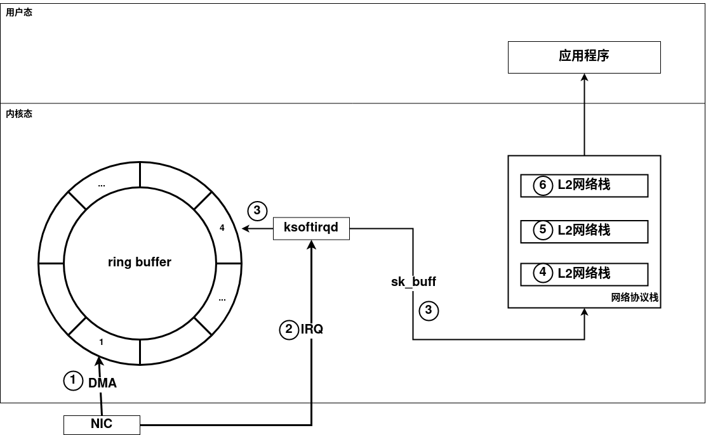

网卡与网络栈
前言
偶然看到了arthurchiao大佬写的Linux 网络栈接收数据（RX）：原理及内核实现（2022）文章，从中学习到了许多中断子系统和网络子系统的知识，收获颇丰，特别记录一下。
数据包处理流程
下图是一个数据包从网卡通过内核网络栈到达用户空间的流程

- 网卡通过DMA写入数据到设备驱动预留的ring buffer中
- 网卡产生IRQ硬件中断
- 软中断处理线程ksoftirq基于ring buffer生成内核协议栈的数据包skb
- 内核链路层协议栈处理
- 内核网络层协议栈处理
- 内核传输层协议栈处理
参考
本博客所有文章除特别声明外，均采用 CC BY-NC-SA 4.0 许可协议。转载请注明来自 H4wk1ns's blog！